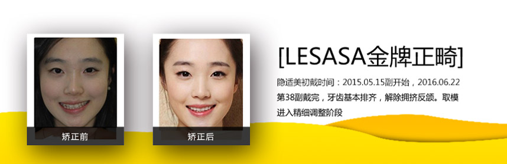

从业经历：2010-2015年，陆军总医院口腔科主任；2015年至今 乐莎莎技术总监
荣誉奖励：陆军总医院优秀医师奖，陆军总医院2015优秀医师奖
擅长项目
精彩案例

荣誉展示
学术研究
微创牙髓治疗---塑造未来
正根管治疗后牙齿(endodontically treated teeth,ETT)抗折能力下降与病理性牙体缺损以及根管治疗本身造成的硬组织(特别是颈部牙体组织)损失密切相关。近两年,有学者提出了微创牙髓治疗(minimally invasive endodontics,MIE)的新理念,目的是在预防和控制牙髓或根尖周疾病的同时最大限度保留牙体组织。该理念的提出和实施离不开新器械与新材料的发展,显微镜具有优良的放大能
微创牙髓治疗---塑造未来
正根管治疗后牙齿(endodontically treated teeth,ETT)抗折能力下降与病理性牙体缺损以及根管治疗本身造成的硬组织(特别是颈部牙体组织)损失密切相关。近两年,有学者提出了微创牙髓治疗(minimally invasive endodontics,MIE)的新理念,目的是在预防和控制牙髓或根尖周疾病的同时最大限度保留牙体组织。该理念的提出和实施离不开新器械与新材料的发展,显微镜具有优良的放大能
微创牙髓治疗---塑造未来
正根管治疗后牙齿(endodontically treated teeth,ETT)抗折能力下降与病理性牙体缺损以及根管治疗本身造成的硬组织(特别是颈部牙体组织)损失密切相关。近两年,有学者提出了微创牙髓治疗(minimally invasive endodontics,MIE)的新理念,目的是在预防和控制牙髓或根尖周疾病的同时最大限度保留牙体组织。该理念的提出和实施离不开新器械与新材料的发展,显微镜具有优良的放大能
微创牙髓治疗---塑造未来
正根管治疗后牙齿(endodontically treated teeth,ETT)抗折能力下降与病理性牙体缺损以及根管治疗本身造成的硬组织(特别是颈部牙体组织)损失密切相关。近两年,有学者提出了微创牙髓治疗(minimally invasive endodontics,MIE)的新理念,目的是在预防和控制牙髓或根尖周疾病的同时最大限度保留牙体组织。该理念的提出和实施离不开新器械与新材料的发展,显微镜具有优良的放大能
给医生留言
好评医院

网友评分
治疗效果：4.9
服务态度：4.9
院内环境：4.9
与同行相比
↑ 高于97.6%
↑ 高于96.2%
↑ 高于93.8%
4008-705-633
深圳市南山区南山大道创业路 南海城
就诊预约
| 2017-09-20 | 2017-09-20 | 2017-09-20 |
| 2017-09-20 | 2017-09-20 | 2017-09-20 |
| 2017-09-20 | 2017-09-20 | 2017-09-20 |
| 2017-09-20 | 2017-09-20 | 2017-09-20 |
常见问题
牙齿不齐矫正贵不贵?
牙齿不齐是很常见的一种现象，现在通 过牙齿矫正都可以得到很好的修复，不过现在牙齿矫正的方法很多，每种矫正的价格都不一样，也有很多因素影响到矫正的价格。
牙齿不齐矫正贵不贵?
牙齿不齐是很常见的一种现象，现在通 过牙齿矫正都可以得到很好的修复，不过现在牙齿矫正的方法很多，每种矫正的价格都不一样，也有很多因素影响到矫正的价格。
牙齿不齐矫正贵不贵?
牙齿不齐是很常见的一种现象，现在通 过牙齿矫正都可以得到很好的修复，不过现在牙齿矫正的方法很多，每种矫正的价格都不一样，也有很多因素影响到矫正的价格。